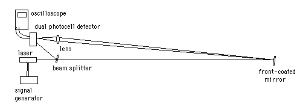

Speed of LightLight from a modulated He-Ne laser is detected at the beginning and end of a measured path. The AC signals from photodetectors at these two points are compared on an oscilloscope to measure the phase difference and from that the velocity of the light. A beam splitter is used to divide the beam for detection at begining and end of the measured path. Plane, front-surfaced mirrors are used to deflect the beam to get as long a path as possible. |
Index | |
| HyperPhysics***** Class Home ***** Physics 3901 | Go Back |
Equipment NeededModulated Helium-Neon laser, Metrologic Model ML-868Double photo-detector and amplifier for detecting laser at beginning and end of path. Beam splitter Signal generator for modulating the laser. Oscilloscope Front-faced plane mirrors and mirror holders Converging condenser lens for the second photodetector. 9V battery for detector box. Frequency counter Several BNC cables and about 2 ea red and black banana leads abt 18" Four BNC tees |
Index |
| HyperPhysics***** Physics 3901 ***** Speed of Light | Go Back |
Basic Setup |
Index |
| HyperPhysics***** Physics 3901 ***** Speed of Light | Go Back |
Experimental Problems: Speed of Light1. Frequency must be high to give a measurable separation. 1.4 MHz was used by W95 group. A triangle wave made reading the wave position easier. 2. Mirror shake was a problem. Hopefully the use of optical tables and mounts will help with that. 3. The signal from one photocell would bleed into the other, making the signal indistinct. The W95 group used the signal generator as a standard and measured the two photocells against that standard and took the difference. 4. The scope is difficult to read because of vibrations and a fuzzy signal. 5. Internal delays of the triggering of the oscilloscope? caused the line of best fit of the data to not cross zero. To overcome this problem, the slope of the data at different distances with respect to time was taken to get the speed of light. |
Index Trouble- shooting |
| HyperPhysics***** Physics 3901 ***** Speed of Light | Go Back |
Troubleshooting: Speed of LightThere are a number of experimental problems inherent in the speed of light experiment. Here are some further comments about problems encountered. 1. The high gain amplifier used to amplify the signal from the photodetectors tends to oscillate. |
Index |
| HyperPhysics***** Physics 3901 ***** Speed of Light | Go Back |
Sample Data
|
Index | ||||
| HyperPhysics***** Physics 3901 ***** Speed of Light | Go Back |